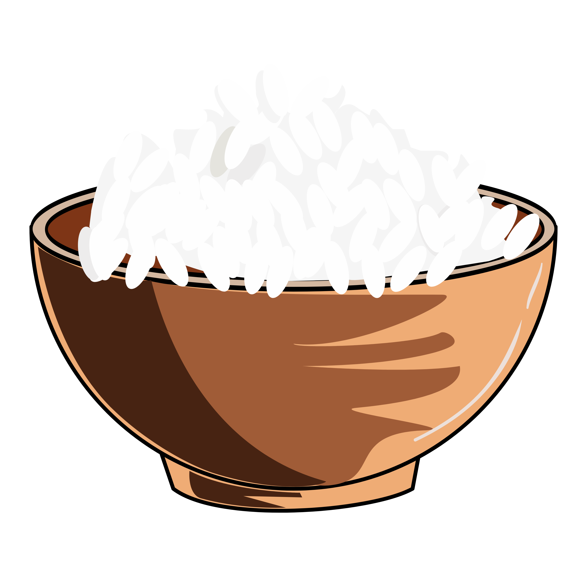

Kalkulator Jejak Air Makanan
Hitung dampak konsumsi makanan Anda terhadap penggunaan air
Daging Sapi
Daging Domba
Daging Ayam

Nasi
Sayuran

Buah-buahan
Tempe
Tahu

Singkong
Ubi
Hasil Perhitungan
Tips Hemat Air
Tahukah Anda?
Produksi 1 kg daging sapi membutuhkan sekitar 15.000 liter air, setara dengan mengisi 100 bak mandi!
Dampak Lingkungan
Memilih makanan dengan jejak air yang lebih rendah dapat membantu melestarikan sumber daya air untuk generasi mendatang.